See current site
A Second Life - Writeup
CSCI 436, Winter 2021, Dr. Shameem Ahmed
Katie Werner: wernerk5@wwu.edu, Keili Rivera: riverak3@wwu.edu, Ashima Shiravstava: shrivaa@wwu.edu, Beryn Staub-Waldenberg: staubwb@wwu.edu
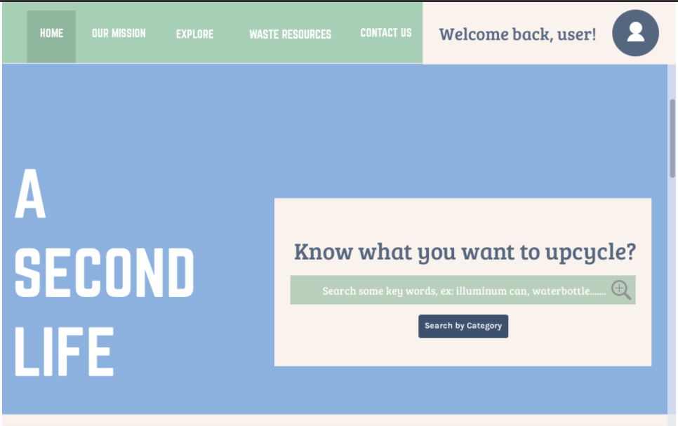
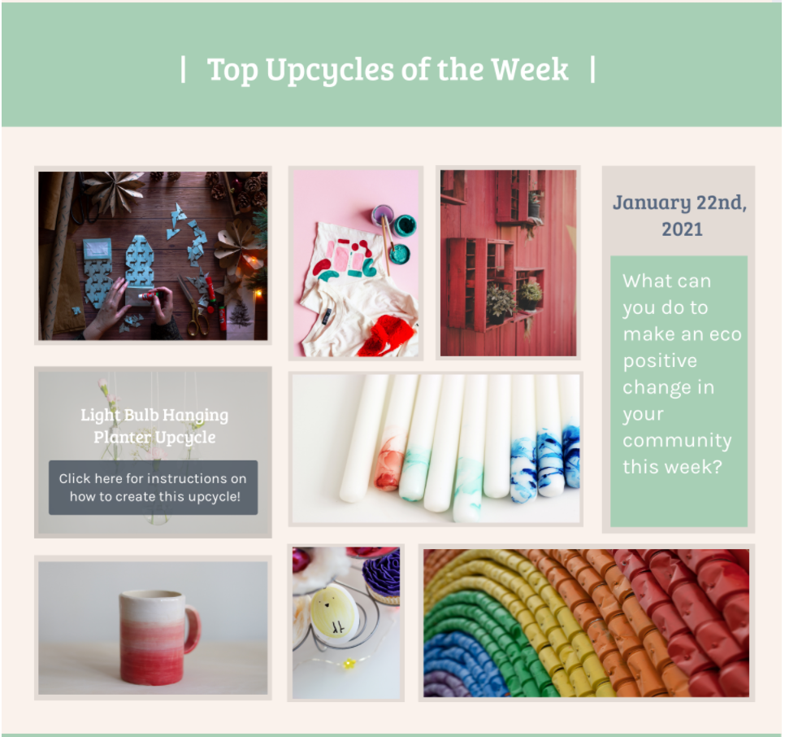
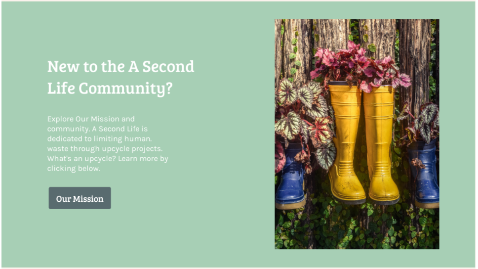
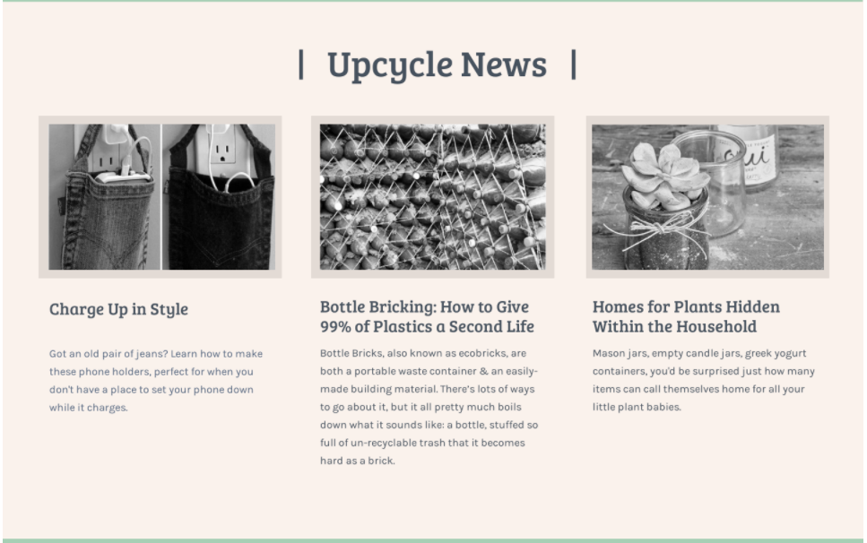
Group Prototype 2:
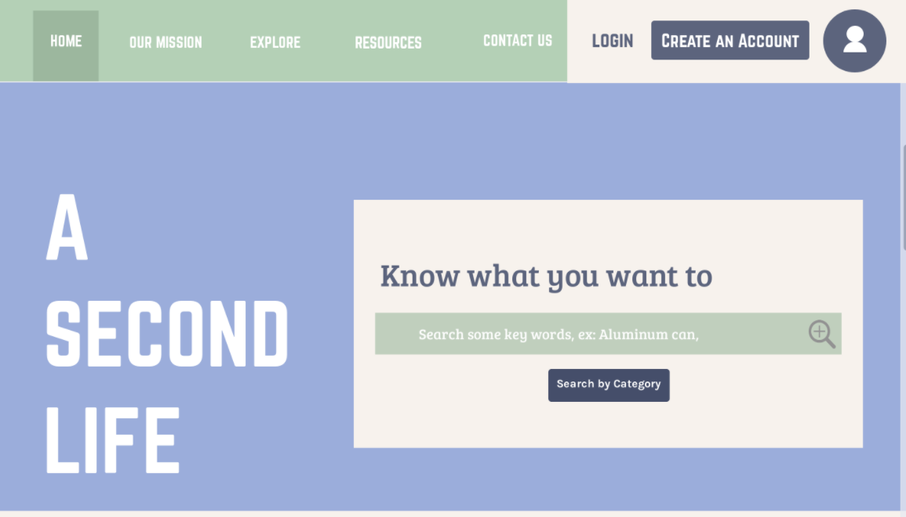
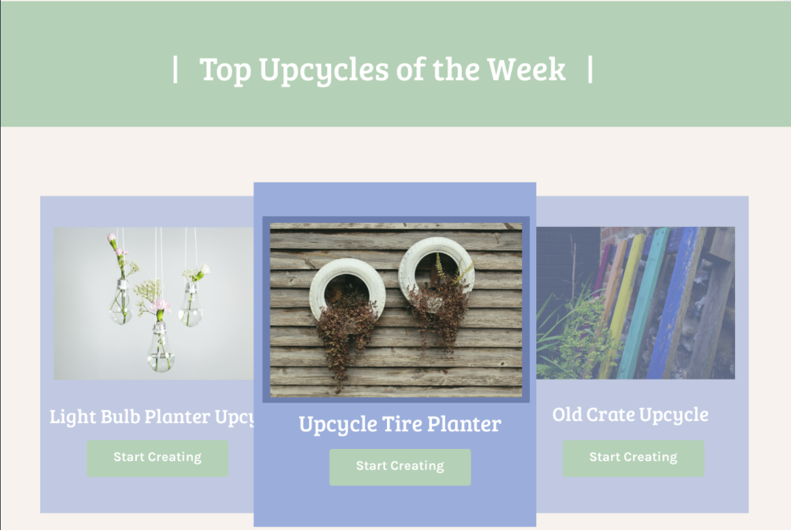
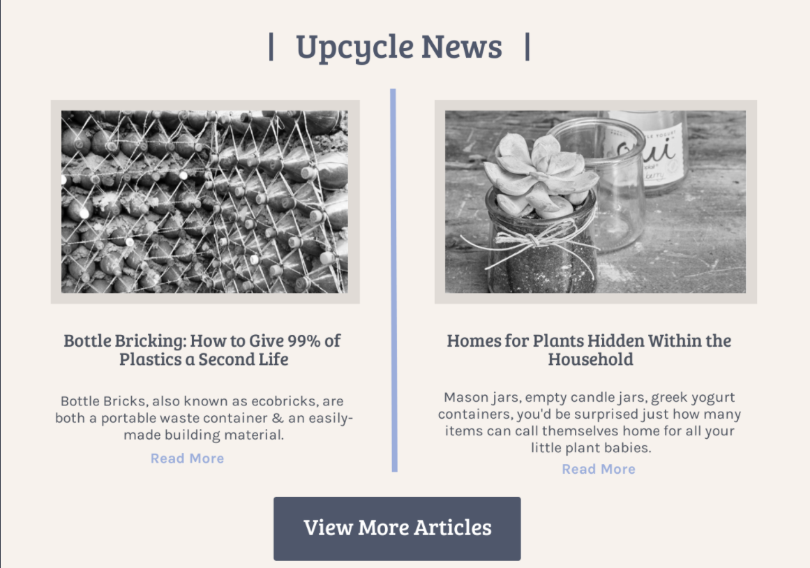
Group Prototype 3:
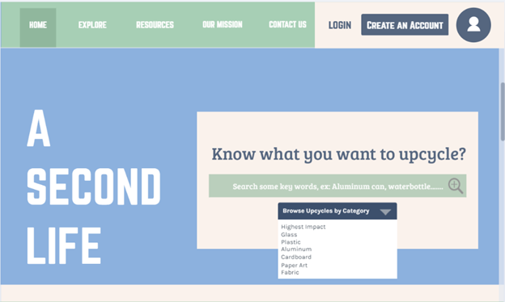
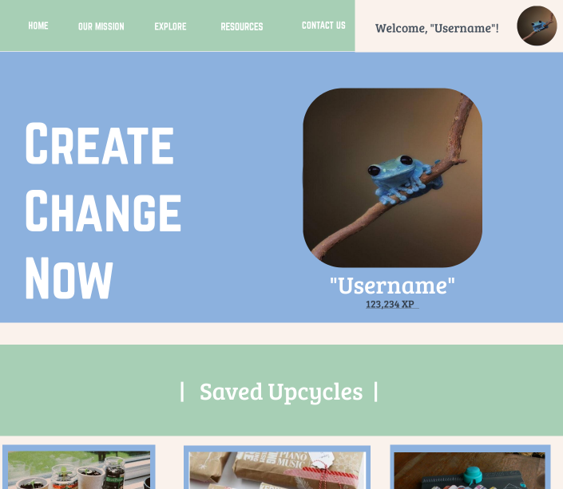
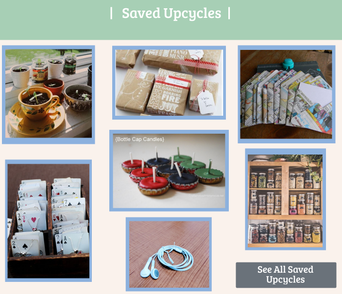
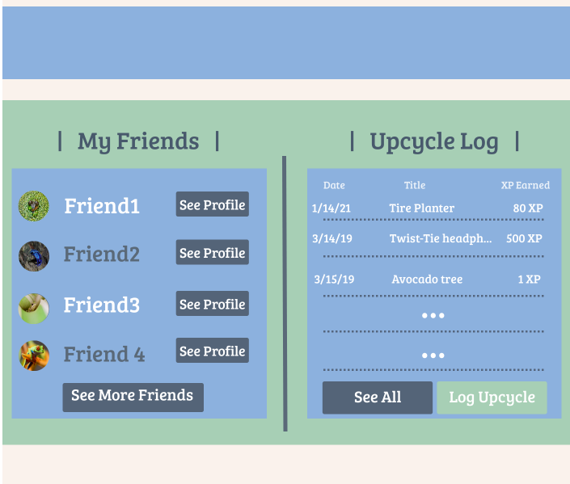
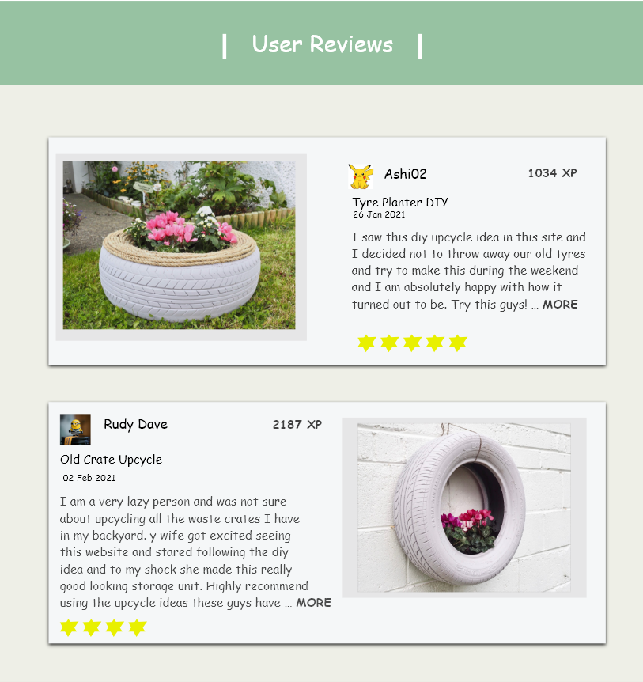
Project Description:
What is the problem? Consumption of disposable and one-time-use products contributes to a lot of waste and in turn has a high environmental cost. Consumable products both cost energy and other valuable resources to create and of course pollute the environment when they are thrown away.
What are you trying to solve? We are trying to make a positive impact on the issue of environmental destruction from excessive waste production.
Which SDG goals (among 17) are you trying to achieve? We are trying to achieve the SDG goals of climate action, sustainable cities and communities, responsible consumption and production, and life on land.
Why is this an important problem? Is there any global impact? Many people are not aware of ways they can reuse items in their homes. More often than not, our garbage cans get filled with all sorts of items that can be used for something else. According to the U.S. Environmental Protection Agency, the average person in America produces 4.9 pounds of municipal solid waste each day. While recycling is a great way to become more environmentally conscious, many are unaware of the importance of reusing. Products such as plastic containers and grocery bags do not break down for many years while they sit in landfills. Finding ways to reuse these products once or twice more before they potentially end up in landfills will dramatically reduce the amount of plastic entering the environment. We believe that A Second Life could have a global impact because our website can be reached by anyone with a computer and a curiosity to learn about how upcycling can have a positive impact on the environment.
Who are the target users? Why should they care? Our target users are those who want to take small steps towards a more sustainable lifestyle, especially if they do not know how. Users should care because it is important to help contribute to the sustainability of one’s community and planet.
How many people (should be at least millions of people) will be benefited from your solution? Give evidence(s) of your claim by giving statistics from the previous studies or from any reputed organizations such as WHO, UN, CDC: According to edtimes the fashion industry is responsible for 10% of global carbon emissions which is more than the emissions of international flights. 1.2 billion tons of CO2 is released in the atmosphere every year by the fast fashion industry. The dyes and other chemicals used to cause massive environmental damage. Just by reusing old clothes or thrifting them for 4-5 months, carbon emission by 4%. This was just for clothes, now think what would plastic do to our environment ? Moreover, The UN states that “Should the global population reach 9.6 billion by 2050, the equivalent of almost three planets could be required to provide the natural resources needed to sustain current lifestyles”. Serious problem right ? With our project we are targeting to affect and benefit not just millions but billions of people and more then that, we are targeting to benefit the environment! In today’s world, major changes are dependent on youth voice and change towards sustainability, global warming and carbon emission starts with us!
What is your solution? Our solution is our website, “A Second Life”, which aims to help educate people how to reuse many items we would consider as "single use". Users will be able to type in the item or category of the item they would like to reuse into a search bar, and the results will be a list of creative and practical ideas guiding users to make their next step with said item. The list will include a range of ideas, such as for decoration, for storage, organization, and more. The list will also include links to resources who share the same vision of sustainability by using donated used-items for new purposes as well. Along with the list will be a short and easy to understand description educating the user on the effects that specific item (or category of item) usually has on the planet (e.g. time to break down, what ecosystems are affected, amount of production, etc.) We will use a website as our choice of technology for the purpose of being accessible to the widest range of population possible. The goal is to help people become more aware of the amount of waste they produce each day, and work towards lessening that amount over time in order to improve our environments and create a more sustainably conscious community.
How is your solution different than the existing solutions? In our research of other solutions like ours we did not find another website/app that had upcycles for single use products where you could search by material of an item to find the upcycle. Also, across our research other similar websites and apps did not include a resource page listing places to donate used items and recommendations for brands that use sustainable solutions when managing waste
What technology have you used? Why? We decided to use a website as the platform for our solution. We chose to make a website instead of an app so that our solution could reach more users including the ones that might not have access to a smartphone.
Research Methodology:
Explain your systematic literature review. How many papers did you read? Write a summary of your findings:
As a group we collectively read 10 research papers on related topics to our project. Through our research we found two main aspects of the papers that related most to our project. These two findings were the urgency of the waste crisis and how teaching the practice of upcycling is a great way to teach the importance of sustainability to all ages. Through our research, we learned that if waste production does not peak this century we will have negative irreversible effects on the environment. Knowing this has fueled our passion for creating a website that helps to inform people on simple ways to reduce their production of waste and teach them how to be more sustainable in their daily lives. The other big takeaway from our research was how important it is to teach the idea of upcycling. In one article, it explained how children from two different communities were represented with items that were normally seen as trash and asked them to create something out of them. They were able to come up with ideas such as creating a couch and a snowglobe out of items they normally see as trash. This helped to support our thoughts of if you are able to reframe someones thinking about a single use item they will come up with another way to use it just like an upcycle and in turn cut down on the amount of garbage they put out into the environment.
Explain your system analysis. How many systems did you analyze? Write a summary of your findings:
As a group we analyzed 12 different systems, some being apps and some being websites. From this analysis, we found some similar websites/apps like ours, A Second Life, but none that were exactly the same concept. From the research, we decided something that would be important to add to our page, that we saw on other systems, was a resource page. Our research page would include information on where to take items no longer being used so they can be taken care of in a sustainable way and information on brands that use and support sustainable practices.
Explain your user study. How many interviews did you conduct? Write a summary of your findings:
As a group we conducted four user studies. One of the biggest findings of our interviews were that many people were not as familiar with the idea of upcycles as we thought. Learning this was very helpful, now we knew that we would need to have a comprehensive explanation of what an upcycle is and how making them can have a positive impact on the environment. With this information we decided to implement a new user guide page. This page would end up including information on what an upcycle is, how it helps the planet, and how to get started on our website. We also decided to play around with the search/explore bar on our front navigation, but ultimately we took out the search bar in our final prototype.
Final Product:
- Home Page:
Navigation Bar: that is on each page and takes users to the various pages on the site. Links to pages for: Explore page, Resources page, About page, Contact page, and a page for our project writeup.
Banner/Upcycle Search: The upcycle search box is the first thing that users see when arriving at our website, and by clicking the “start creating button”, users will be redirected to the Explore page
Upcycles of the week: This shows a few featured upcycle ideas on a carousel that users can rotate through. Clicking on a specific upcycle from the carousel will redirect the user to the instructions on how to create the upcycle.
New User Guide Link: Short description of our mission, and a link to a guide for new users on our New User guide page
Upcycle Idea Form: This section shows up on each page. Users can contribute to our website by entering their email address and an upcycle idea of their own, and upon submitting the idea, the website developers can choose to add that idea to our current website.
Footer: This section shows up at the bottom of each page, and provides the user the same links as in the header, so users can easily navigate the website without having to scroll all the way back to the top of the page.
- Explore Page:
This page lets users scroll through various categories of items to upcycle, in order to browse upcycling ideas. Each section has a picture of the category, as well as a dropdown select box that lists all of the upcycle ideas of that specific category. Once a user clicks on an idea they would like to see instructions for, a “create” button pops up and users can click on it to navigate to the specific upcycle page.
Categories: Plastic, tin, glass, food waste, cardboard, and aluminum.
- About Page:
The about page explains our motive for this website and shows our passion for this project. Here we discuss our mission, the start of this project and it’s future.
- Resources Page:
With our resources page we aim to educate our users about a better sustainable lifestyle. Sometimes, people do not have time to make the best out of a used item and are unable to perform upcycling. In this case we provide our user with all the resources they require to still maintain a sustainable lifestyle.
Donation: We provide nearby donation centers that accept all kinds of donations. It is better to donate your used material and give them a new home then to just throw them away. This is a good cause and will also promote a better lifestyle habit.
Companies involved in sustainable recycling: Some companies are involved in the sustainable practice of returning used containers purchased by customers back to their company. Other companies are involved in sustainable recycling practices making their products from recycled materials. Here we list some companies that are involved in these sustainable practices.
- Contact Page:
This page provides users with contact information, and says the area in which we are located.
- New User Guide Page:
New user guide page is for all the new users who visit our website.
We welcome our users and give a very brief introduction for our website.
Upcycle: We make our users familiar with the concept of upcycling and educate them towards what an upcycle is.
Getting started: Finally we give our users three simple steps to get started with their first upcycle experience.
- Upcycle Instruction Page:
This page gives details about the upcycle chosen, including the title of the upcycle, the item, category of the item, the environmental impact the item would normally have when thrown into the garbage, necessary supplies to complete the project, and instructions on how to create the upcycle. It also shows a picture of the finished upcycle.
- Discuss all the technologies/software/API you used:
For the front-end, we used Vue.js which is a javascript library. We used the component concept to reuse our environment and to link our pages together and NPM core modules to run our server. We used Vue Router to add routes to our website to make the flow of our working environment easier. To transfer data from parent component to child component, we used the Vue props which acts as a global variable for all the different pages and sends data from one page to another. And finally for UI/UX we used HTML and CSS to make it look more presentable. For back-end, to fetch our upcycle data we used Node.js. We created a mini database using node and called those data in our upcycle page to show different types of upcycles. That data is delivered to the front end by an http request to the express server that we created.
- Provide the link of your code repository: A Second Life's Github
Future Work:
How could your work be extended and why would that be useful? In terms of the implementation of the web app, there are a variety of ways that it could be extended and made more dynamic/reusable. To start with, the website could be connected to a file storage service such as Amazon S3 to store the upcycle images. This would allow users of the app to upload their own upcycle ideas. If the website were to really get a lot of user traffic, it would probably also make sense to have a scalable hosting setup and a more automated and professional deployment setup. In terms of the overall goal for the project, it would make sense to add more functionality to the individual upcycle pages and perhaps also have overarching items pages that would provide the user with information about the environmental impacts of that particular item and the various things that the user can do to counteract problems associated with that particular item. This is something we plan to work on if we continue the project.